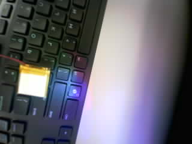
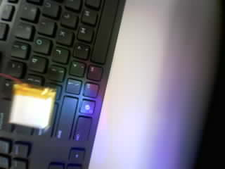
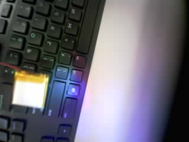
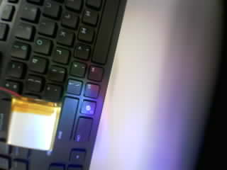

Frame 61: SMALL_CHANGE | 4.333% changed area | growth 0% across 1 frames
Original JPEG · MeasurementsFrame 62: SMALL_CHANGE | 4.667% changed area | growth 7% across 2 frames
Original JPEG · MeasurementsFrame 63: SMALL_CHANGE | 5.146% changed area | growth 18% across 3 frames
Original JPEG · Measurements
Frame 64: SMALL_CHANGE | 3.792% changed area | growth -12% across 4 frames
Original JPEG · MeasurementsFrame 65: SMALL_CHANGE | 5.333% changed area | growth 23% across 5 frames
Original JPEG · Measurements
Frame 66: SMALL_CHANGE | 5.146% changed area | growth 10% across 5 frames
Original JPEG · Measurements
Frame 67: SMALL_CHANGE | 4.854% changed area | growth -5% across 5 frames
Original JPEG · MeasurementsFrame 68: SMALL_CHANGE | 5.625% changed area | growth 48% across 5 frames
Original JPEG · Measurements
Frame 69: SMALL_CHANGE | 7.104% changed area | growth 33% across 5 frames
Original JPEG · MeasurementsFrame 70: SMALL_CHANGE | 7.458% changed area | growth 44% across 5 frames
Original JPEG · Measurements